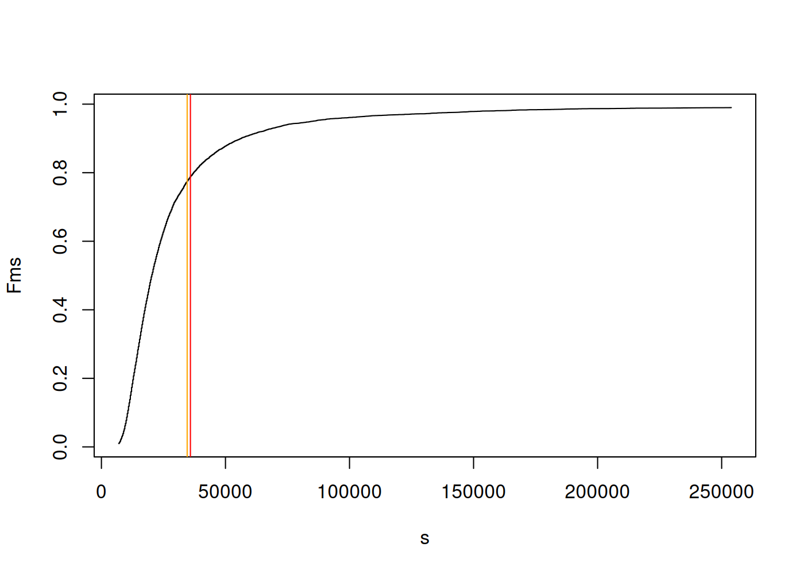
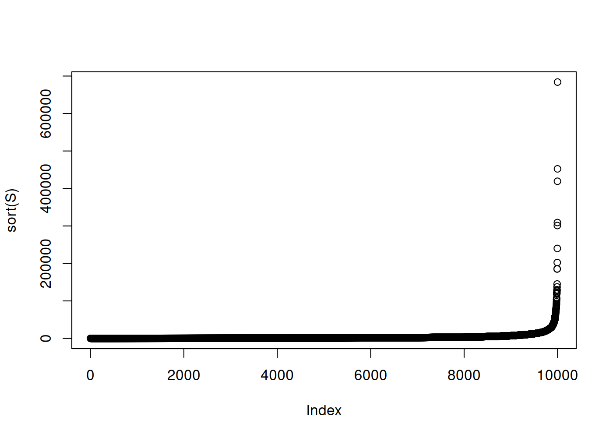
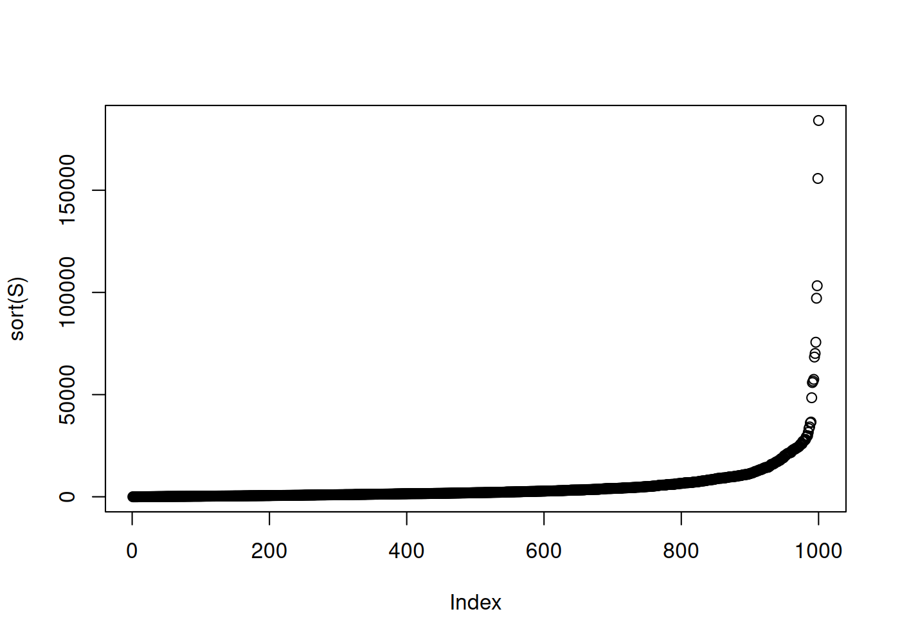
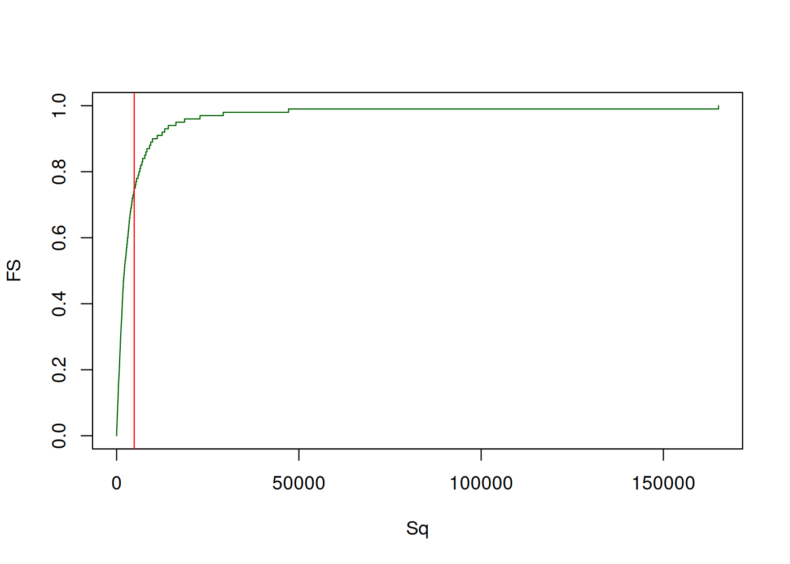
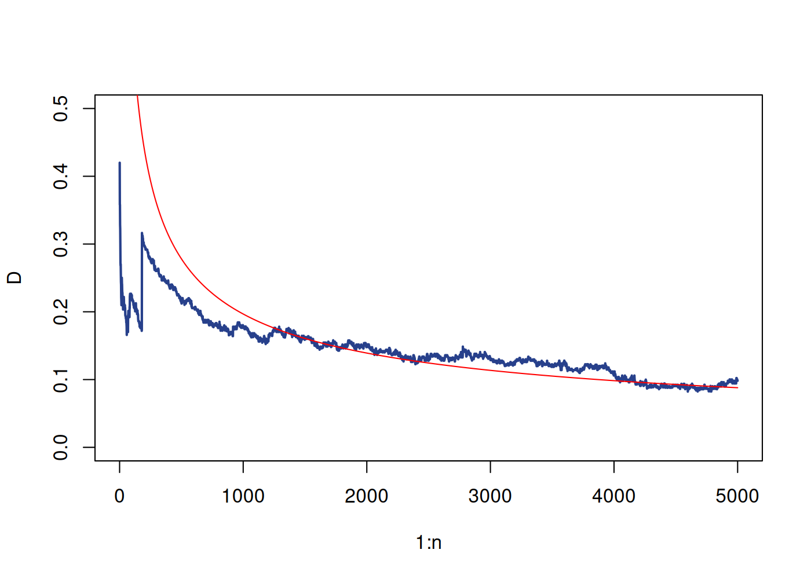
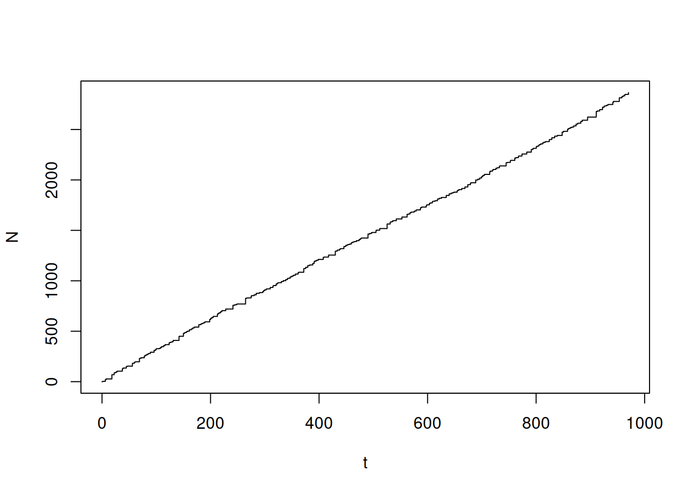
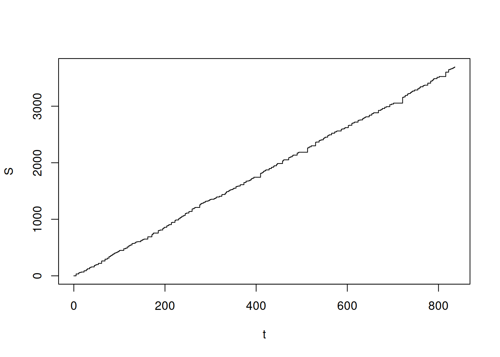

Capítulo 3 Modelos de pérdida agregada
\(R\) Ganancia \(P\) Ingreso por primas \(I\) Ingreso por inversiones \(S\) Pago de siniestros \(G\) Gastos de subscripción \[\begin{equation} R = P + I - S - G \end{equation}\]
3.1 Mutualización del riesgo
La idea de mantener un seguro está basada en la mutualización de los riesgos. La mutualización como tal nace del mismo mecanismo bajo el cual funciona un seguro, cada asegurado transfiera su riesgo individual a la compañia de seguros por su parte, la suma total de estos riesgos \(S\) es el riesgo total que asume el asegurador.
Los riesgos de cada uno de los \(n \in \mathbb{N}\) asegurados, pueden ser representados por variables aleatorias \(X_1,\ldots X_n\), las mismas pueden ser independientes o dependientes entre ellas. El costo total del portafolio está dado por la suma de todos estos riesgos. \[\begin{equation} S = \sum\limits_{i=1}^n X_i \end{equation}\] El conocer la distribución del costo total \(S\) es una tarea crucial para el asegurador.
El costo total esperado esta dado claramente por la siguiente expresión. \[\begin{equation} \mathbb{E}[ S ] = \mathbb{E}\left[ \sum\limits_{i=1}^n X_i \right] = \sum\limits_{i=1}^n \mathbb{E}\left[ X_i \right] \end{equation}\] la varianza de la variable aleatoria del costo total \(S\), está dada por: \[\begin{equation} \mathbb{V}\left[ S \right] = \mathbb{V}\left[ \sum\limits_{i=1}^n X_i \right] = \sum\limits_{i=1}^n \mathbb{V}\left[ X_i \right] + \sum\limits_{i=1}^n \sum\limits_{j=1,j\neq i}^n \mathbb{C}\left[ X_i, X_j \right] = \sum\limits_{i=1}^n \mathbb{V}\left[ X_i \right] + 2\sum\limits_{i=1}^{n-1} \sum\limits_{j=i+1}^n \mathbb{C}\left[ X_i, X_j \right] \end{equation}\]
\(S_n = \sum\limits_{i=1}^n X_i\) \[\begin{equation} W_n = \frac{S_n}{n} \end{equation}\]
\[\begin{equation} \mathbb{E}\left[ W_n \right] = \mathbb{E}\left[ \frac{S_n}{n} \right] = \frac{1}{n} \mathbb{E}\left[ S_n \right] \end{equation}\]
\[\begin{equation} \mathbb{V}\left[ W_n \right] = \mathbb{V}\left[ \frac{S_n}{n} \right] = \frac{1}{n^2} \mathbb{V}\left[ S_n \right] \end{equation}\]
3.2 Modelo individual
En el modelo de riesgos individuales consideramos que el número de siniestros que se producirán es conocido, por ejemplo puede ser a lo sumo el tamaño de la población asegurada, en tal caso la variable aleatoria \(N\) pasa a ser una constante, que representaremos por \(n\). De esta forma, la severidad total puede ser fácilmente representada por: \[\begin{equation} S = \sum\limits_{i=1}^n X_i \end{equation}\]
La hipótesis más usual que sostiene a este modelo es la indenpendencia entre cada uno de los reclamos \(X_i\) y \(X_j\) son independientes para cualquier \(1 \leq i \neq j \leq n\).
El valor esperado de la severidad total \(S\) es: \[\begin{eqnarray*} \mathbb{E}[S] & = & \mathbb{E}\left[ \sum\limits_{i=1}^n X_i \right] \\ & = & \sum\limits_{i=1}^n \mathbb{E}\left[ X_i \right] \end{eqnarray*}\]
m <- 100
n <- 200
u <- sample( c( 1, 2, 3, 4 ), size = n, replace = TRUE )
s <- sample( c( 1, 2, 3, 4 ), size = n, replace = TRUE )
X <- sapply( 1:n, FUN = function( i ) rlnorm( m, meanlog = u[ i ], sdlog = s[ i ] ) )
S <- sapply( 1:m, FUN = function( i ) sum( X[i,] ) )FS <- seq( 0, 1, 0.01 )
Sq <- quantile( S, probs = FS )
EeS <- mean( S )
ES <- sum( sapply( 1:n, FUN = function( i ) exp( u[i] + 0.5 * s[i]^2 ) ) )
plot( Sq, FS, type = 's', col = 'dodgerblue4' )
abline( v = EeS, col = 'red' )
abline( v = ES, col = 'orange' )
3.3 Modelo colectivo
The collective risk model consider the number \(N\) of claims arising from policies at a given period and the amount of each claim represented by \(X_i\) for \(i\)-th claim. Then the consider the aggregate claims generated by the portfolio in the period under study. \[\begin{equation} S = \sum\limits_{i=1}^N X_i \end{equation}\]
m <- 100
n <- 1000
u <- 5
s <- 2
l <- 5
N <- rpois( n = m, lambda = l )
X <- lapply( 1:m, FUN = function( i ) rlnorm( N[i], meanlog = u, sdlog = s ) )
S <- sapply( X, FUN = function( x ) sum( x ) )
plot( sort( S ) )
D <- function( x, m, M ) {
return( min( max( x - m, 0 ), M ) )
}
m <- 1000
n <- 100
u <- 5
s <- 2
l <- 5
N <- rpois( n = m, lambda = l )
X <- lapply( 1:m, FUN = function( i ) rlnorm( N[i], meanlog = u, sdlog = s ) )
DX <- lapply( X, FUN = function( x ) sapply( x, FUN = function( y ) D( y, 10, 1000 ) ) )
S <- sapply( X, FUN = function( x ) sum( x ) )
plot( sort( S ) )
\(S_1, \ldots, S_m \rightsquigarrow F_S\)
FS <- seq( 0, 1, 0.01 )
Sq <- quantile( S, probs = FS )
ES <- mean( S )
plot( Sq, FS, type = 's', col = 'darkgreen' )
abline( v = ES, col = 'red' )
\[\begin{equation} \mathbb{E}[ S ] = \int_{\mathbb{R}_+} f_S( x )\ dx \approx \frac{1}{m} \sum\limits_{i=1}^m S_i \end{equation}\]
Example 3.1 En este caso en particular estudiaremos la velocidad de convergencia del método resultante del teorema del límite central 2.1. Generaremos una simulación aleatoria de la suma agregada \(S_n\) y mostraresmo s
m <- 500
n <- 5000
u <- 4
s <- 2
X <- lapply( 1:m, FUN = function( j ) rlnorm( n, meanlog = u, sdlog = s ) )
EX <- exp( u + 0.5 * s^2 )
SDX <- sqrt( ( exp( s^2 ) - 1 ) * exp( 2 * u + s^2 ) )
S <- lapply( X, FUN = function( x ) cumsum( x ) )
ES <- sapply( 1:n, FUN = function( i ) mean( sapply( 1:m, FUN = function( j ) S[[ j ]][ i ] ) ) )
VS <- sapply( 1:n, FUN = function( i ) var( sapply( 1:m, FUN = function( j ) S[[ j ]][ i ] ) ) )
NS <- lapply( S, FUN = function( s ) ( s - ES ) / sqrt( abs( VS ) ) )
z <- seq( -4, 4, length.out = 100 )
FSn <- lapply( 1:n, FUN = function( i ) ecdf( sapply( 1:m, FUN = function( j ) NS[[ j ]][ i ] ) )( z ) )
D <- sapply( FSn, FUN = function( Fn ) max( abs( Fn - pnorm( z ) ) ) )
C <- 0.015
# C <- 1 / sqrt( 2 * pi )
rho <- exp( 3 * u + 3^2 * s^2 / 2 )
Bn <- C * rho / ( SDX^3 * sqrt( 1:n ) )
plot( 1:n, D, pch = 16, cex = 0.5, type = 'l', lwd = 2, lty = 1, ylim = c( 0, 0.5 ), col = 'royalblue4' )
points( 1:n, Bn, type = 'l', lty = 1, col = 'red' )
l <- 3
n <- 300
dt <- rexp( n = n, rate = 1 / l )
t <- c( 0, cumsum( dt ) )
dN <- sapply( dt, FUN = function( w ) rpois( 1, lambda = l * w ) )
N <- c( 0, cumsum( dN ) )
sh <- 3
rt <- 2
X <- lapply( dN, FUN = function( n ) rgamma( n, shape = sh, rate = rt ) )
dS <- sapply( X, FUN = function( x ) sum( x ) )
S <- c( 0, cumsum( dS ) )
plot( t, N, type = 's' )

3.4 Medidas de riesgo
Definition 2.4 (Medida de riesgo coherente) Una medida de riesgo coeherente es una función \(\zeta: \mathbb{R} \longrightarrow \mathbb{R}\), que satisface la siguientes propiedades:
Homogenidad positiva, para cualquier \(a > 0\) \[\begin{equation} \zeta( a X ) = a \zeta( X ) \end{equation}\]
Invarianza ante las traslaciones, para cualquier \(a > 0\) \[\begin{equation} \zeta( \alpha X + a ) = \zeta( \alpha X ) + a \end{equation}\]
Monotonicidad, Si \(X \leq Y\) \[\begin{equation} \zeta( X ) \leq \zeta( Y ) \end{equation}\]
Sub-aditividad \[\begin{equation} \zeta( X + Y ) \leq \zeta( X ) + \zeta( Y ) \end{equation}\]
\[\begin{equation} VaR_{\alpha}( X ) = F_X^{-1}( \alpha ) \end{equation}\]
\[\begin{equation} TVaR_{\alpha}( X ) = \frac{1}{1-\alpha} \int\limits_{\alpha}^1 VaR_u( X )\ du \end{equation}\]
u <- 4
s <- 0.5
n <- 1e4
X <- rlnorm( n, meanlog = u, sdlog = s )
k <- seq( 0, 1, 0.2 )
VaRX <- quantile( X, probs = k, names = FALSE )
TVaRX <- sapply(
1:length( VaRX ),
FUN = function( i ) ifelse( k[ i ] < 1, ( 1 / ( 1 - k[ i ] ) ) * mean( X * ( X > VaRX[ i ] ) ), max( X ) ) )
hist( X, breaks = 100, xlim = c( 0, 1.1 * max( X ) ) )
abline( v = VaRX, col = 'red' )